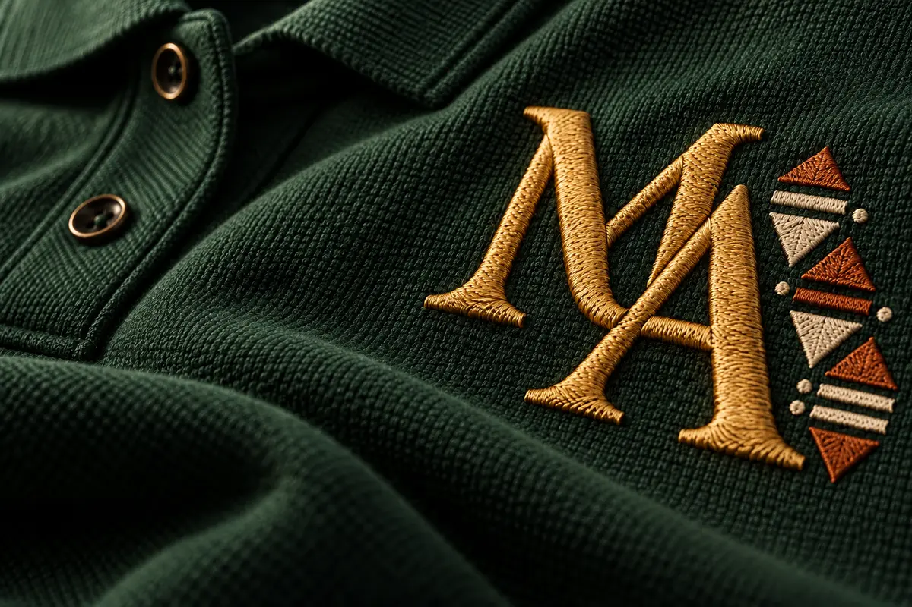

02 / Embroidery
Thread with depth.
Embroidery turns a mark into texture. It is a tactile, structured finish for the pieces people reach for every day: caps, polos, jackets, bags and workwear.

The method
Give the logo a surface people can feel.
Embroidery is about structure: the way the thread catches light, the way a small mark gains authority and the way a garment feels more finished because the design is built into it. We help simplify artwork where needed so the final stitch stays clean.
Best for
- Caps, beanies and headwear
- Polos, jackets and workwear
- Company and team uniforms
- Small marks and lettering
Think about
- Stitch count and level of detail
- Thread color and garment contrast
- Placement on structured garments
- How the item will be worn and washed
The embroidery feeling
Quiet detail. Strong identity.
Embroidery does not need to shout. A well-placed mark, stitched with restraint, can make a uniform feel like a brand and a blank feel like a keepsake.
A considered finish
From first thread to final piece.
We keep the path simple: review the art, choose the garment, settle the placement and make sure the stitch supports the design.
Prepare the mark
We assess the art for size, line weight and stitch clarity.
Choose the blank
Fabric, structure and color all influence the finished embroidery.
Set the placement
We align the mark with the way the piece will actually be worn.
Stitch the identity
Approved details move into production with a focus on clean texture.
Ready for thread
Make the mark part of the garment.
Share the logo, the blank and the feeling you want the piece to carry.